Topic 6-01: Visualization
Zuguang Gu z.gu@dkfz.de
2024-01-21
Source:vignettes/topic6_01_visualization.Rmd
topic6_01_visualization.RmdORA result
Single ORA result
library(GSEAtraining)
lt = readRDS(system.file("extdata", "ora.rds", package = "GSEAtraining"))
diff_gene = lt$diff_gene
diff_gene = convert_to_entrez_id(diff_gene)## ## gene id might be SYMBOL (p = 0.980 )## 'select()' returned 1:many mapping between keys and columns## ## Registered S3 methods overwritten by 'treeio':
## method from
## MRCA.phylo tidytree
## MRCA.treedata tidytree
## Nnode.treedata tidytree
## Ntip.treedata tidytree
## ancestor.phylo tidytree
## ancestor.treedata tidytree
## child.phylo tidytree
## child.treedata tidytree
## full_join.phylo tidytree
## full_join.treedata tidytree
## groupClade.phylo tidytree
## groupClade.treedata tidytree
## groupOTU.phylo tidytree
## groupOTU.treedata tidytree
## inner_join.phylo tidytree
## inner_join.treedata tidytree
## is.rooted.treedata tidytree
## nodeid.phylo tidytree
## nodeid.treedata tidytree
## nodelab.phylo tidytree
## nodelab.treedata tidytree
## offspring.phylo tidytree
## offspring.treedata tidytree
## parent.phylo tidytree
## parent.treedata tidytree
## root.treedata tidytree
## rootnode.phylo tidytree
## sibling.phylo tidytree## clusterProfiler v4.8.3 For help: https://yulab-smu.top/biomedical-knowledge-mining-book/
##
## If you use clusterProfiler in published research, please cite:
## T Wu, E Hu, S Xu, M Chen, P Guo, Z Dai, T Feng, L Zhou, W Tang, L Zhan, X Fu, S Liu, X Bo, and G Yu. clusterProfiler 4.0: A universal enrichment tool for interpreting omics data. The Innovation. 2021, 2(3):100141##
## Attaching package: 'clusterProfiler'## The following object is masked from 'package:stats':
##
## filter
library(org.Hs.eg.db)## Loading required package: AnnotationDbi## Loading required package: stats4## Loading required package: BiocGenerics##
## Attaching package: 'BiocGenerics'## The following objects are masked from 'package:stats':
##
## IQR, mad, sd, var, xtabs## The following objects are masked from 'package:base':
##
## Filter, Find, Map, Position, Reduce, anyDuplicated, aperm, append,
## as.data.frame, basename, cbind, colnames, dirname, do.call,
## duplicated, eval, evalq, get, grep, grepl, intersect, is.unsorted,
## lapply, mapply, match, mget, order, paste, pmax, pmax.int, pmin,
## pmin.int, rank, rbind, rownames, sapply, setdiff, sort, table,
## tapply, union, unique, unsplit, which.max, which.min## Loading required package: Biobase## Welcome to Bioconductor
##
## Vignettes contain introductory material; view with
## 'browseVignettes()'. To cite Bioconductor, see
## 'citation("Biobase")', and for packages 'citation("pkgname")'.## Loading required package: IRanges## Loading required package: S4Vectors## Warning: package 'S4Vectors' was built under R version 4.3.2##
## Attaching package: 'S4Vectors'## The following object is masked from 'package:clusterProfiler':
##
## rename## The following object is masked from 'package:utils':
##
## findMatches## The following objects are masked from 'package:base':
##
## I, expand.grid, unname##
## Attaching package: 'IRanges'## The following object is masked from 'package:clusterProfiler':
##
## slice##
## Attaching package: 'AnnotationDbi'## The following object is masked from 'package:clusterProfiler':
##
## select
res = enrichGO(gene = diff_gene, ont = "BP", OrgDb = org.Hs.eg.db, pvalueCutoff = 1)
res = add_more_columns(res)Let’s start with the enrichment table from the ORA analysis.
tb = res@result
head(tb)## ID Description GeneRatio
## GO:0001819 GO:0001819 positive regulation of cytokine production 79/777
## GO:0031349 GO:0031349 positive regulation of defense response 68/777
## GO:0002237 GO:0002237 response to molecule of bacterial origin 61/777
## GO:0002274 GO:0002274 myeloid leukocyte activation 49/777
## GO:0032496 GO:0032496 response to lipopolysaccharide 59/777
## GO:0019221 GO:0019221 cytokine-mediated signaling pathway 71/777
## BgRatio pvalue p.adjust qvalue
## GO:0001819 489/18614 1.285130e-25 6.579865e-22 5.102642e-22
## GO:0031349 441/18614 5.345810e-21 1.368527e-17 1.061284e-17
## GO:0002237 366/18614 1.127385e-20 1.375774e-17 1.066904e-17
## GO:0002274 240/18614 1.151399e-20 1.375774e-17 1.066904e-17
## GO:0032496 345/18614 1.343530e-20 1.375774e-17 1.066904e-17
## GO:0019221 492/18614 3.280167e-20 2.799076e-17 2.170665e-17
## geneID
## GO:0001819 2268/4843/7305/6556/3082/11119/50943/8692/5743/3595/2219/58484/54209/5008/50487/51311/4210/80381/5054/59341/55801/3458/942/7474/3552/6772/9173/8809/22954/8013/29126/1958/729230/3659/3553/2867/10288/3620/1116/948/3569/7097/6653/834/116/5795/115362/26060/2207/10417/4332/5196/6850/26253/64127/3965/5724/136/929/1051/64581/10855/6288/4023/8877/247/353514/1604/246778/728/2214/3133/3134/93978/150372/11027/4321/338382/6348
## GO:0031349 7305/8692/3430/5743/2219/58484/54209/5008/50487/3055/51311/730249/4210/5054/59341/3458/7474/57142/9173/8807/729230/81030/3659/3553/2867/5819/3620/84034/8638/948/3569/7097/834/83666/84166/8547/6279/64332/7941/2209/115362/26060/1520/6280/6283/4332/6850/26253/64127/11314/136/929/2358/1051/64581/4023/353514/5320/5359/145741/3133/3134/388125/93978/11027/4321/338382/6348
## GO:0002237 4843/6401/6556/50943/22904/5743/2920/3595/54209/3055/54/730249/5054/1440/6347/1594/57379/6648/942/7474/3552/29126/6590/6372/3553/10288/3620/948/3569/7097/10068/834/4283/6279/64332/133/10417/249/6280/9076/2921/6374/5196/2919/80149/717/64127/3965/3627/6373/5724/3576/2353/929/1051/9516/1604/728/6891/11027/6348
## GO:0002274 2268/7305/6556/22904/8692/3430/54209/50487/3696/3458/7474/9173/8807/8013/729230/3598/55509/6372/30817/5819/8291/3569/7097/2207/6283/80149/81501/6850/338339/11314/116071/6338/3965/5724/3576/136/712/8877/2624/3579/2242/5320/5359/728/2214/57126/10537/11027/6348
## GO:0032496 4843/6401/6556/50943/22904/5743/2920/3595/54209/3055/54/730249/5054/1440/6347/1594/57379/6648/942/7474/3552/29126/6590/6372/3553/10288/3620/948/3569/7097/10068/834/4283/6279/64332/133/10417/249/6280/9076/2921/6374/5196/2919/80149/717/64127/3965/3627/6373/5724/3576/2353/929/1051/9516/1604/11027/6348
## GO:0019221 608/51208/2920/3595/54209/5008/3055/11024/1440/6354/6347/3458/7474/3552/6772/7850/9173/8809/8807/22954/1441/1958/729230/3598/81030/6372/3659/3553/51554/10288/3601/8638/3569/3557/834/83666/4283/50506/84166/79092/10410/64332/5795/2180/26060/2207/8986/3577/2921/6374/5196/2919/6850/3429/3627/6373/3576/54625/8877/1237/3579/10581/8519/7293/8784/353514/11027/4321/6351/6349/6348
## Count n_hits n_genes gs_size n_totle log2_fold_enrichment z_score
## GO:0001819 79 79 777 489 18614 1.952420 13.42425
## GO:0031349 68 68 777 441 18614 1.885158 11.94952
## GO:0002237 61 61 777 366 18614 1.997367 12.06854
## GO:0002274 49 49 777 240 18614 2.290149 12.66281
## GO:0032496 59 59 777 345 18614 2.034520 12.11803
## GO:0019221 71 71 777 492 18614 1.789562 11.52816The mostly-used type of plot is to use simple statistical graphics for a small set of pre-selected gene sets.
par(mar = c(4.1, 20, 4, 1))
barplot(tb$n_hits[1:10], horiz = TRUE, names.arg = tb$Description[1:10], las = 1)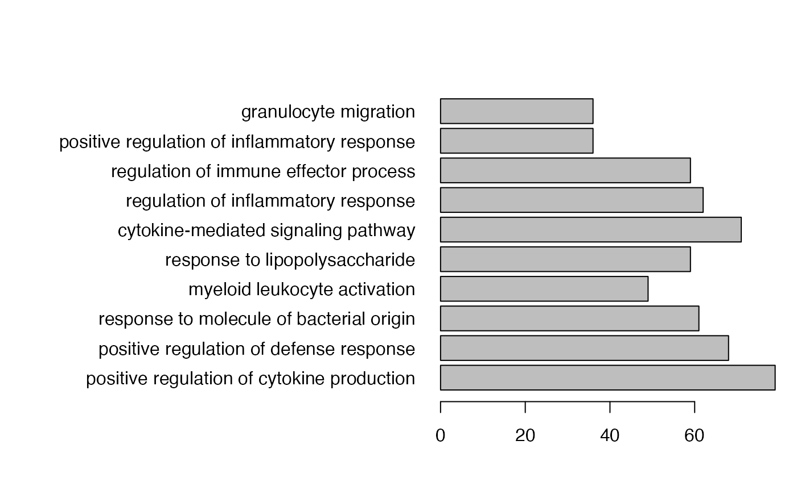
Using ggplot2 is a better idea for visualizing data.
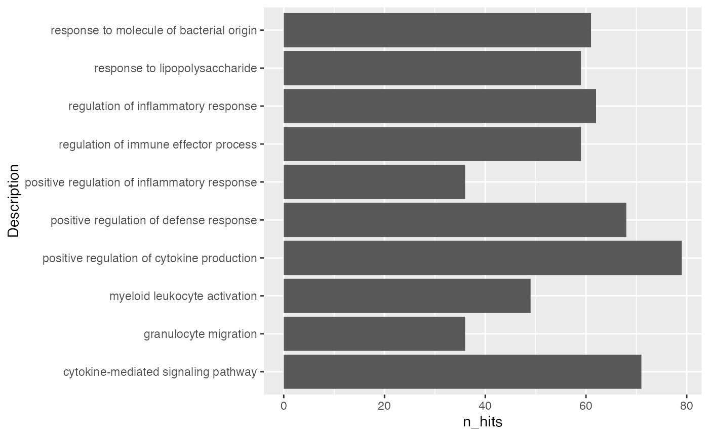
Number of DE genes in gene set may not be a good statistic, more commonly used statistics are log2 fold enrichment or -log10 p.adjust.
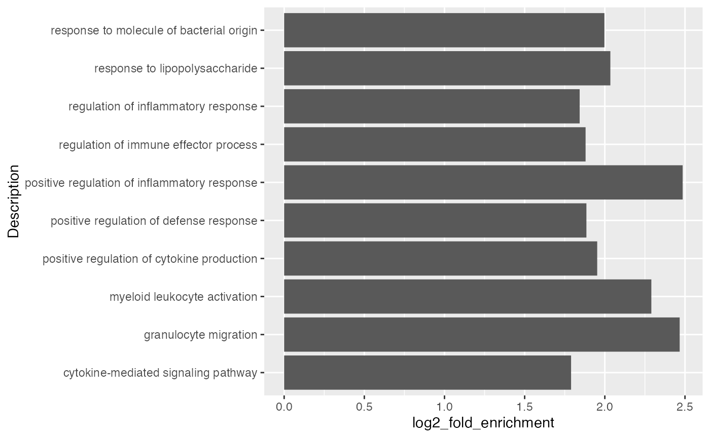
It is also common to add the p-values/adjusted p-values to the bars.
ggplot(tb[1:10, ], aes(x = log2_fold_enrichment, y = Description)) +
geom_col() +
geom_text(aes(x = log2_fold_enrichment, label = sprintf('%1.e', p.adjust)))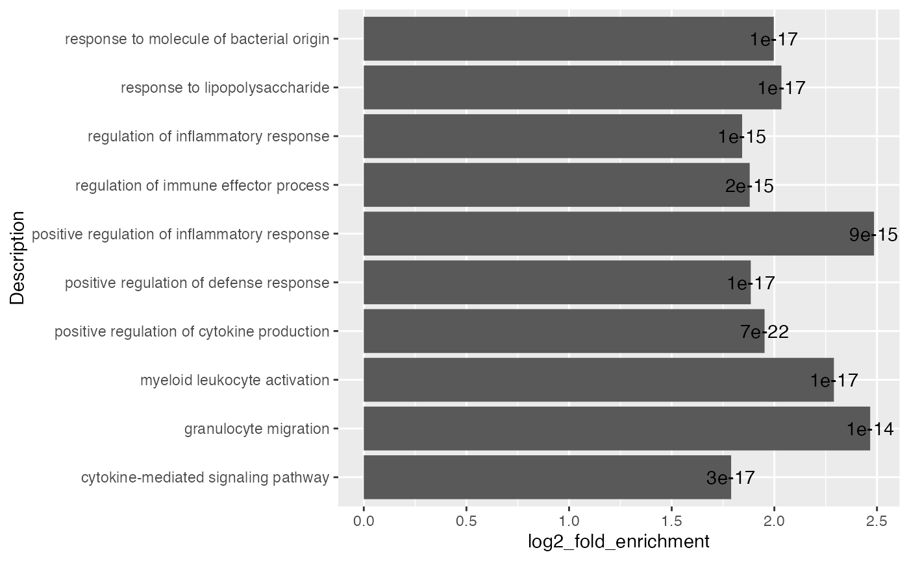
By default, ggplot2 reorders labels alphabetically. You can set the name as a factor and specify the order there.
ggplot(tb[1:10, ], aes(x = log2_fold_enrichment, y = factor(Description, levels = Description))) +
geom_col()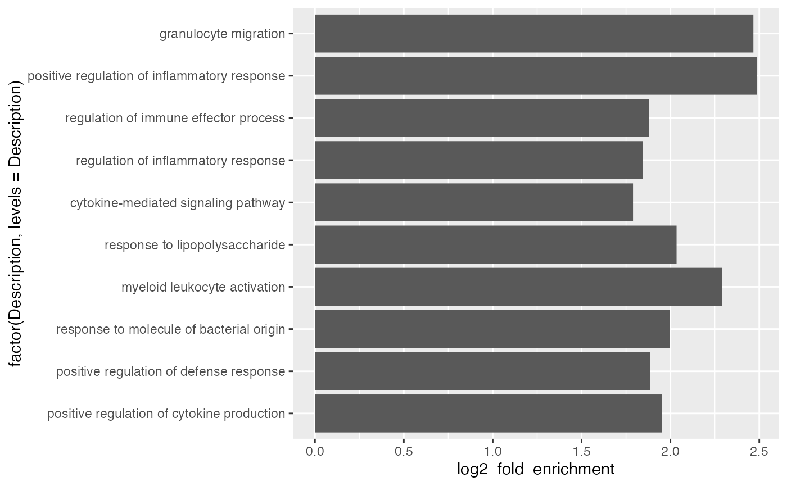
Points are also very frequently used.
ggplot(tb[1:10, ], aes(x = log2_fold_enrichment, y = Description)) +
geom_point() +
xlim(0, max(tb$log2_fold_enrichment[1:10]))
Using dot plot, we can map a second statistic to the size of dots.
ggplot(tb[1:10, ], aes(x = log2_fold_enrichment, y = Description, size = n_hits)) +
geom_point() +
xlim(0, max(tb$log2_fold_enrichment[1:10]))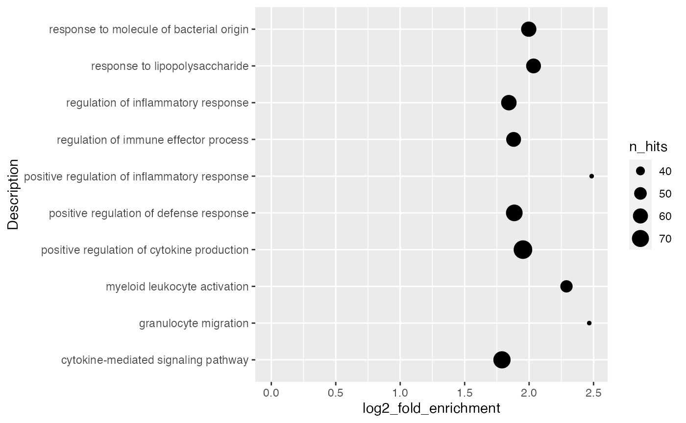
Even more, we can map a third statistic to the dot colors.
ggplot(tb[1:10, ], aes(x = log2_fold_enrichment, y = Description, size = n_hits, col = n_hits/gs_size)) +
geom_point()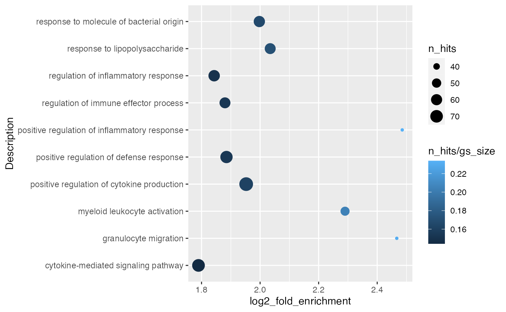
A volcano plot which is -log10(p.adjust) vs log2 fold enrichment:
ggplot(tb, aes(x = log2_fold_enrichment, y = -log10(p.adjust))) +
geom_point(col = ifelse(tb$log2_fold_enrichment > 1 & tb$p.adjust < 0.001, "black", "grey")) +
geom_hline(yintercept = 3, lty = 2) + geom_vline(xintercept = 1, lty = 2)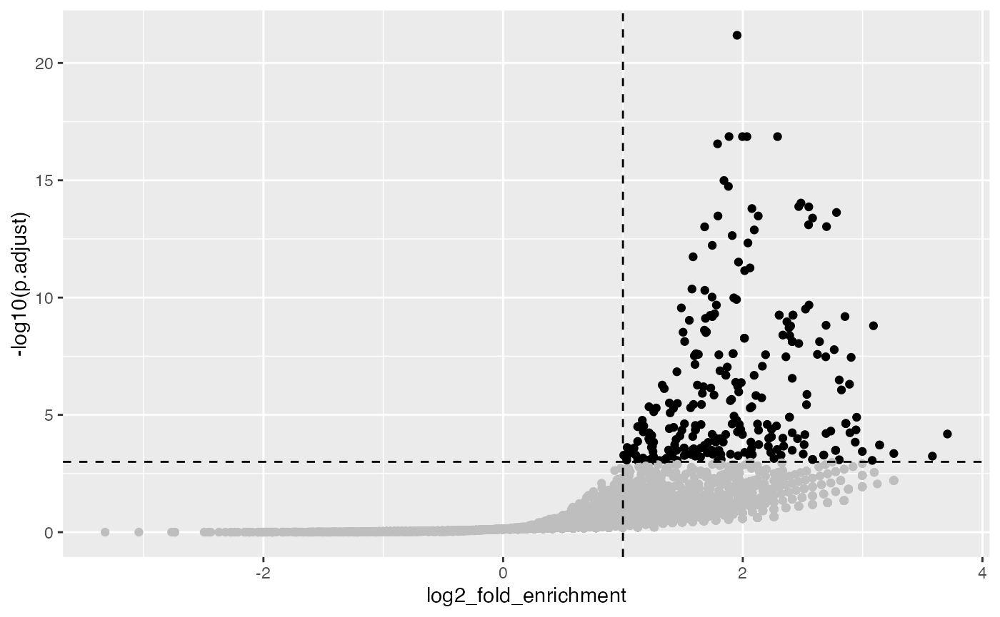
With the volcano plot, we can easily see the preference of enrichment to the sizes of gene sets.
ggplot(tb, aes(x = log2_fold_enrichment, y = -log10(p.adjust), color = gs_size, size = n_hits)) +
geom_point() + scale_colour_distiller(palette = "Spectral")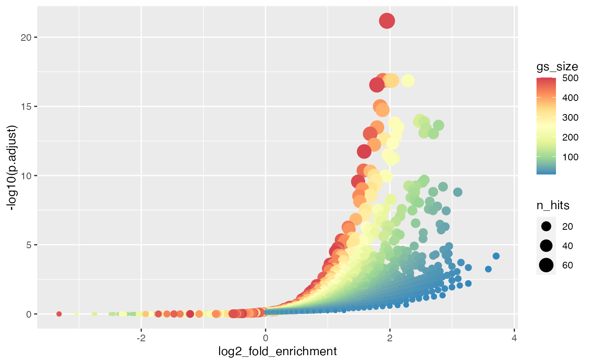
Visualizations from clusterProfiler
clusterProfiler provides many visualization functions (now these functions are all moved into a new enrichplot package).
library(enrichplot)
cnetplot(res)## Warning: ggrepel: 1 unlabeled data points (too many overlaps). Consider
## increasing max.overlaps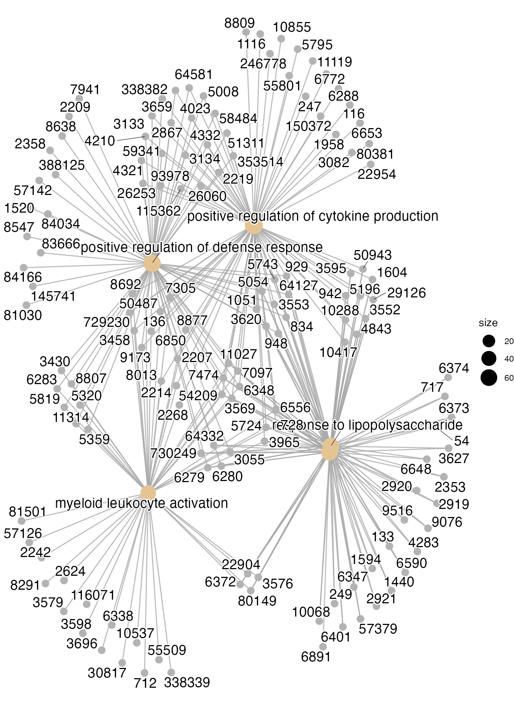
heatplot(res, showCategory = 10)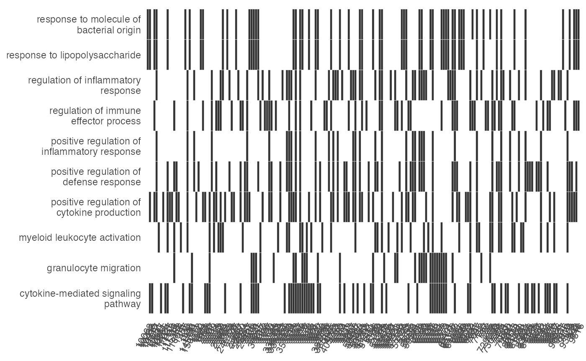
res = pairwise_termsim(res)
treeplot(res)## ! # Invaild edge matrix for <phylo>. A <tbl_df> is returned.
## ! # Invaild edge matrix for <phylo>. A <tbl_df> is returned.
## ! # Invaild edge matrix for <phylo>. A <tbl_df> is returned.
## ! # Invaild edge matrix for <phylo>. A <tbl_df> is returned.
## ! # Invaild edge matrix for <phylo>. A <tbl_df> is returned.
## ! # Invaild edge matrix for <phylo>. A <tbl_df> is returned.
## ! # Invaild edge matrix for <phylo>. A <tbl_df> is returned.
## ! # Invaild edge matrix for <phylo>. A <tbl_df> is returned.
## ! # Invaild edge matrix for <phylo>. A <tbl_df> is returned.
## ! # Invaild edge matrix for <phylo>. A <tbl_df> is returned.
## ! # Invaild edge matrix for <phylo>. A <tbl_df> is returned.
## ! # Invaild edge matrix for <phylo>. A <tbl_df> is returned.
## ! # Invaild edge matrix for <phylo>. A <tbl_df> is returned.
## ! # Invaild edge matrix for <phylo>. A <tbl_df> is returned.
## ! # Invaild edge matrix for <phylo>. A <tbl_df> is returned.
## ! # Invaild edge matrix for <phylo>. A <tbl_df> is returned.
## ! # Invaild edge matrix for <phylo>. A <tbl_df> is returned.
## ! # Invaild edge matrix for <phylo>. A <tbl_df> is returned.
## ! # Invaild edge matrix for <phylo>. A <tbl_df> is returned.
## ! # Invaild edge matrix for <phylo>. A <tbl_df> is returned.
## ! # Invaild edge matrix for <phylo>. A <tbl_df> is returned.
## ! # Invaild edge matrix for <phylo>. A <tbl_df> is returned.
## ! # Invaild edge matrix for <phylo>. A <tbl_df> is returned.
## ! # Invaild edge matrix for <phylo>. A <tbl_df> is returned.
## ! # Invaild edge matrix for <phylo>. A <tbl_df> is returned.
## ! # Invaild edge matrix for <phylo>. A <tbl_df> is returned.
## ! # Invaild edge matrix for <phylo>. A <tbl_df> is returned.
## ! # Invaild edge matrix for <phylo>. A <tbl_df> is returned.
## ! # Invaild edge matrix for <phylo>. A <tbl_df> is returned.
## ! # Invaild edge matrix for <phylo>. A <tbl_df> is returned.
## ! # Invaild edge matrix for <phylo>. A <tbl_df> is returned.
## ! # Invaild edge matrix for <phylo>. A <tbl_df> is returned.
## ! # Invaild edge matrix for <phylo>. A <tbl_df> is returned.
## ! # Invaild edge matrix for <phylo>. A <tbl_df> is returned.
## ! # Invaild edge matrix for <phylo>. A <tbl_df> is returned.
## ! # Invaild edge matrix for <phylo>. A <tbl_df> is returned.
## ! # Invaild edge matrix for <phylo>. A <tbl_df> is returned.
## ! # Invaild edge matrix for <phylo>. A <tbl_df> is returned.
## ! # Invaild edge matrix for <phylo>. A <tbl_df> is returned.
## ! # Invaild edge matrix for <phylo>. A <tbl_df> is returned.
## ! # Invaild edge matrix for <phylo>. A <tbl_df> is returned.
## ! # Invaild edge matrix for <phylo>. A <tbl_df> is returned.
## ! # Invaild edge matrix for <phylo>. A <tbl_df> is returned.
## ! # Invaild edge matrix for <phylo>. A <tbl_df> is returned.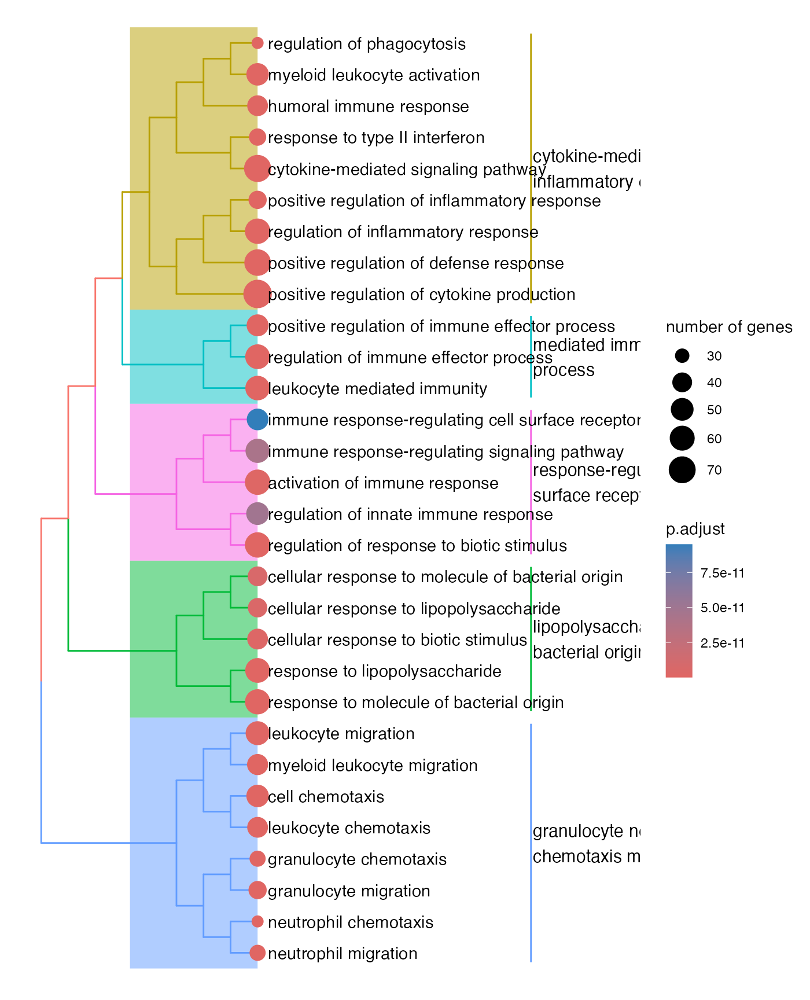
emapplot(res)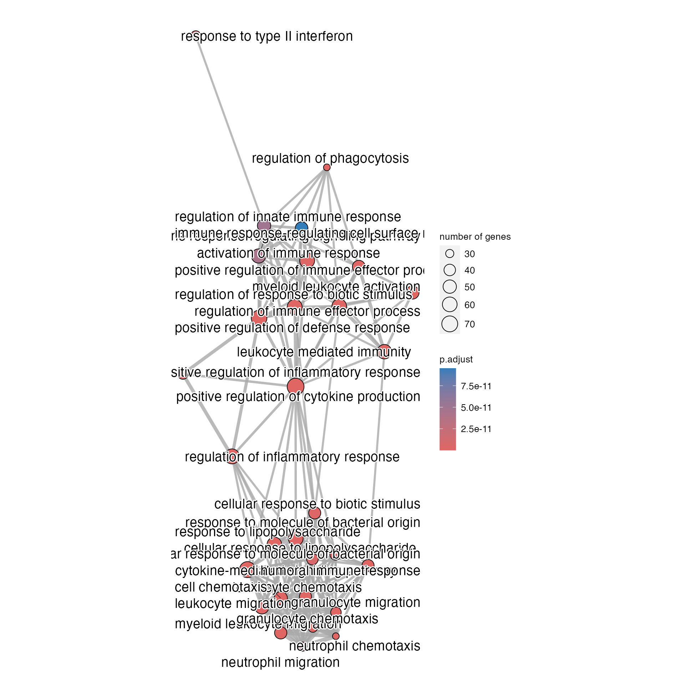
upsetplot(res)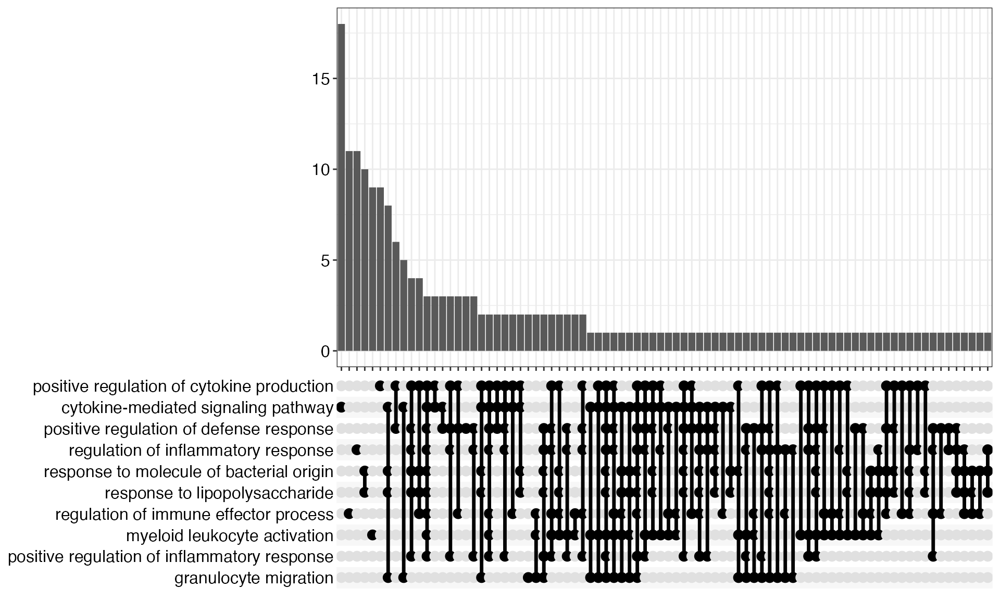
Multiple ORA results
To visualize multiple ORA enrichment tables in one plot, we need to first prepare a data frame which combines results for a pre-selected gene sets.
lt = readRDS(system.file("extdata", "lt_enrichment_tables.rds", package = "GSEAtraining"))
set.seed(666)
terms = sample(lt[[1]]$ID, 10)
tb = NULL
for(nm in names(lt)) {
x = lt[[nm]]
x = x[x$ID %in% terms, colnames(x) != "geneID"]
x$sample = nm
tb = rbind(tb, x)
}
ggplot(tb, aes(x = sample, y = Description, size = -log10(p.adjust))) +
geom_point(color = ifelse(tb$p.adjust < 0.05, "black", "grey"))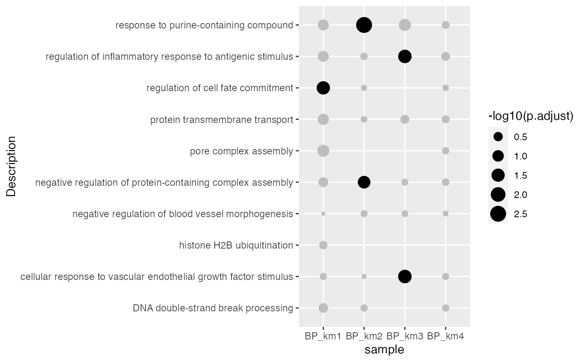
ggplot(tb, aes(x = sample, y = wrap_text(Description), size = -log10(p.adjust))) +
geom_point(color = ifelse(tb$p.adjust < 0.05, "black", "grey"))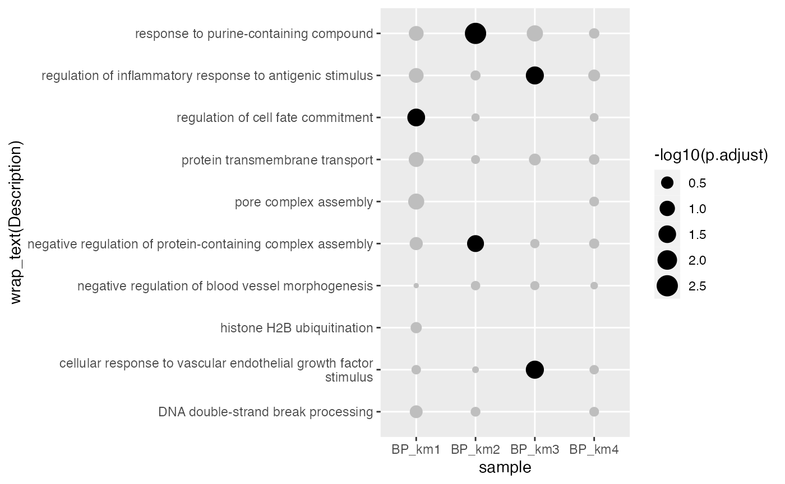
GSEA result
Single GSEA result
gene_diff_score = readRDS(system.file("extdata", "gene_diff_score.rds", package = "GSEAtraining"))
gene_diff_score = convert_to_entrez_id(gene_diff_score)## gene id might be SYMBOL (p = 1.000 )## 'select()' returned 1:many mapping between keys and columns
gene_diff_score = sort(gene_diff_score, decreasing = TRUE)
res_gsea = gseGO(geneList = gene_diff_score, ont = "BP", OrgDb = org.Hs.eg.db, pvalueCutoff = 1)## preparing geneSet collections...## GSEA analysis...## leading edge analysis...## done...
tb = res_gsea@result
head(tb)## ID
## GO:0007186 GO:0007186
## GO:0098655 GO:0098655
## GO:0098662 GO:0098662
## GO:0030001 GO:0030001
## GO:1902850 GO:1902850
## GO:0007204 GO:0007204
## Description setSize
## GO:0007186 G protein-coupled receptor signaling pathway 472
## GO:0098655 monoatomic cation transmembrane transport 426
## GO:0098662 inorganic cation transmembrane transport 420
## GO:0030001 metal ion transport 484
## GO:1902850 microtubule cytoskeleton organization involved in mitosis 69
## GO:0007204 positive regulation of cytosolic calcium ion concentration 119
## enrichmentScore NES pvalue p.adjust qvalue
## GO:0007186 0.3655642 1.855424 1.164415e-10 5.880296e-07 5.143037e-07
## GO:0098655 0.3312117 1.667024 4.035200e-07 1.018888e-03 8.911421e-04
## GO:0098662 0.3312151 1.666702 7.008275e-07 1.094736e-03 9.574802e-04
## GO:0030001 0.3237042 1.644856 8.671175e-07 1.094736e-03 9.574802e-04
## GO:1902850 -0.4809040 -2.234202 1.344009e-06 1.357449e-03 1.187255e-03
## GO:0007204 0.4426870 1.952751 2.554407e-06 1.842822e-03 1.611773e-03
## rank leading_edge
## GO:0007186 1687 tags=39%, list=25%, signal=31%
## GO:0098655 1934 tags=39%, list=29%, signal=30%
## GO:0098662 1934 tags=39%, list=29%, signal=30%
## GO:0030001 1917 tags=38%, list=29%, signal=29%
## GO:1902850 1730 tags=51%, list=26%, signal=38%
## GO:0007204 1516 tags=36%, list=23%, signal=28%
## core_enrichment
## GO:0007186 23620/26033/150/9248/23295/2151/6870/3060/3362/4544/2911/6357/6714/6753/3351/6608/815/1113/6366/3360/26532/7432/2842/8685/181/5148/1237/19/9934/680/51704/729230/5573/247/8477/8601/112/107/2775/6370/2919/2099/1812/3358/4157/2783/6344/5144/5741/887/146/1909/5138/1814/5368/4985/134/186/2642/10636/348/29909/88/8851/611/23683/5132/335/1608/4161/3357/3363/11248/6002/6362/9718/7434/2841/2185/6375/2833/3630/623/10692/22844/2219/2780/4935/5330/5294/6360/153/8644/8620/5332/2788/6354/6356/4829/954/135948/113/2792/2253/4987/56288/11069/3248/10266/1258/10672/7275/2843/6364/10268/115/6900/2695/6846/776/4158/1672/3640/26648/6014/2918/345/8484/1816/5140/3000/3558/5995/7409/8111/22986/11247/56848/152/5141/7849/3717/7301/6363/5697/6622/2853/1910/109/1269/9138/7932/2798/6295/9826/9590/1230/6754/1606/6001/6915/6368/916/5996/9368/6755/5443/4852/719/2914/8527/5367/2870/6011/6010/9283/4308/108/3356/6387/2691/10798
## GO:0098655 581/8912/2906/8514/2040/150/7225/596/5371/3786/5027/6524/6553/6568/4544/6556/23479/527/845/6366/859/783/3756/6539/10786/6540/8913/2745/51606/81614/1812/3358/25800/6530/1145/2783/486/5144/55117/9104/6334/1909/1814/5336/3758/1520/4891/90134/26133/5319/88/5581/6262/3357/9254/9512/3208/967/6528/2185/6375/3738/3780/478/3777/623/3755/6335/5330/5294/9446/5664/6564/5170/825/6263/9472/5332/23327/3749/6569/6340/9478/1020/777/931/7222/9498/4987/1258/5587/10021/3764/1535/526/10268/10063/776/5024/528/3458/5250/5026/10058/5534/10246/6534/610/11194/4734/5774/56848/491/4318/7386/6363/6622/482/4842/1910/8671/309/64116/6531/6546/9368/1340/3772/9296/1327/2903/4308/535/3709/3356/2905/3741/1497/6236/9001/6548/4283/8989/5348/10050/6574/774/57468/6557/7779/5142/6834/9114/1236/495/3782/9187/3768/2056/2815/5354/3785/5788/6833/6520/117/9550
## GO:0098662 581/8912/2906/8514/2040/150/7225/596/5371/3786/5027/6524/6553/6568/4544/6556/23479/343/527/845/6366/859/783/3756/6539/10786/6540/8913/2745/51606/81614/1812/3358/25800/6530/2783/486/5144/55117/9104/6334/1909/1814/5336/3758/4891/90134/26133/5319/88/5581/6262/3357/9254/9512/3208/967/6528/2185/6375/3738/3780/478/3777/623/3755/6335/5330/5294/9446/5664/6564/5170/825/6263/9472/5332/23327/3749/6569/6340/9478/1020/777/931/7222/9498/4987/5587/10021/3764/1535/526/10268/10063/776/5024/528/3458/5250/5026/10058/5534/10246/6534/610/11194/4734/5774/56848/491/7386/6363/6622/482/4842/1910/8671/309/64116/6531/6546/9368/1340/3772/9296/1327/2903/4308/535/3709/3356/2905/3741/1497/6236/9001/6548/4283/8989/5348/10050/6574/774/57468/6557/7779/5142/6834/9114/1236/495/3782/9187/3768/2056/2815/5354/3359/3785/5788/6833/6520/117/9550
## GO:0030001 581/8912/2906/8514/2040/150/7225/596/5371/3786/5027/3060/6524/6553/6568/4544/3718/6556/1017/23479/815/9058/920/845/6366/7432/816/859/783/3756/1272/6539/10786/6540/8913/3263/9962/5187/2745/81614/1812/3358/25800/6530/2783/486/5144/55117/9104/6334/7369/1909/1814/5336/3758/4985/134/145389/4891/90134/26133/5319/88/5581/6262/3357/9254/9512/3208/967/6528/2185/6375/3738/3780/2702/478/3777/623/3755/7178/6335/5330/5294/3077/9446/5664/5170/825/6263/9472/5332/23327/3749/6569/6340/475/2512/5743/9478/1020/777/931/7222/9498/4987/10266/5587/10021/3764/1535/10268/10063/776/5024/3458/3273/5026/10058/8884/5534/10246/6534/610/11194/4734/5774/56848/491/3603/6363/6622/482/4842/1910/8671/309/64116/6531/6546/1230/9368/4504/3772/1213/2903/2288/4308/3709/3356/6387/1447/2905/3741/6236/9001/6548/6527/4283/8989/5348/10050/6574/468/774/57468/6557/7779/5142/1236/495/3782/9187/3768/2056/2815/5354/3785/5788/6833/6520/1141
## GO:1902850 991/5347/2316/7415/3303/4926/3925/23636/4134/1058/22974/2801/7283/9493/3833/8480/387/22919/4204/332/55968/4085/9525/10252/23291/8766/3837/891/10253/7272/9183/10735/4751/9371/29899
## GO:0007204 581/7225/596/5371/2151/5027/3060/2911/3718/1907/859/8477/2099/1812/3358/887/146/1909/1814/10563/5319/551/6262/2841/2185/623/2780/5294/1020/7222/4987/10672/2843/5024/3558/5026/3146/3717/4842/1910/6546/1230/6915Similarly, we can visualize NES scores of gene sets.
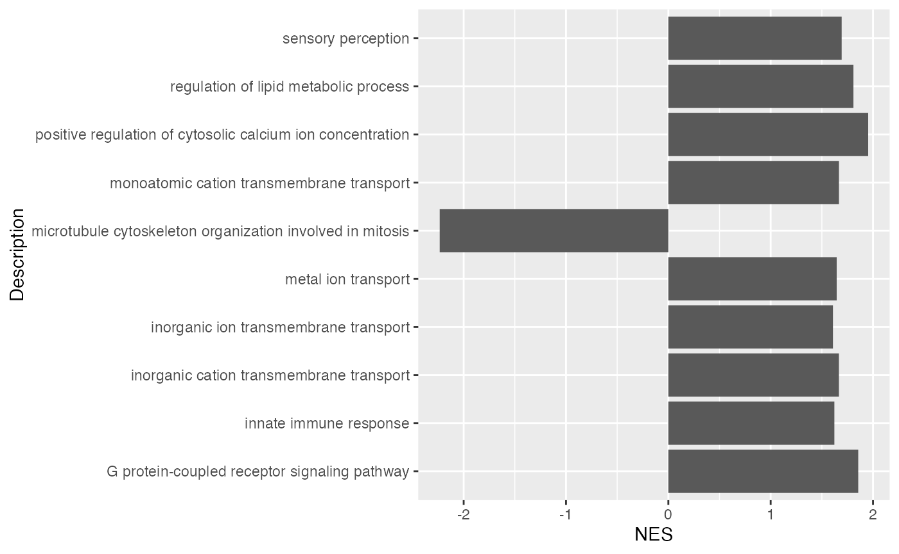
ggplot(tb[1:10, ], aes(x = NES, y = Description)) +
geom_col(fill = ifelse(tb$NES[1:10] > 0, "red", "darkgreen"))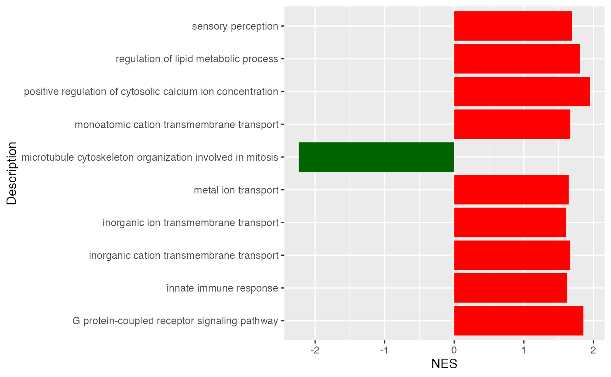
The volcano plot:
ggplot(tb, aes(x = NES, y = -log10(p.adjust))) +
geom_point(col = ifelse(abs(tb$NES) > 1 & tb$p.adjust < 0.05, "black", "grey")) +
geom_hline(yintercept = -log10(0.05), lty = 2) + geom_vline(xintercept = c(1, -1), lty = 2)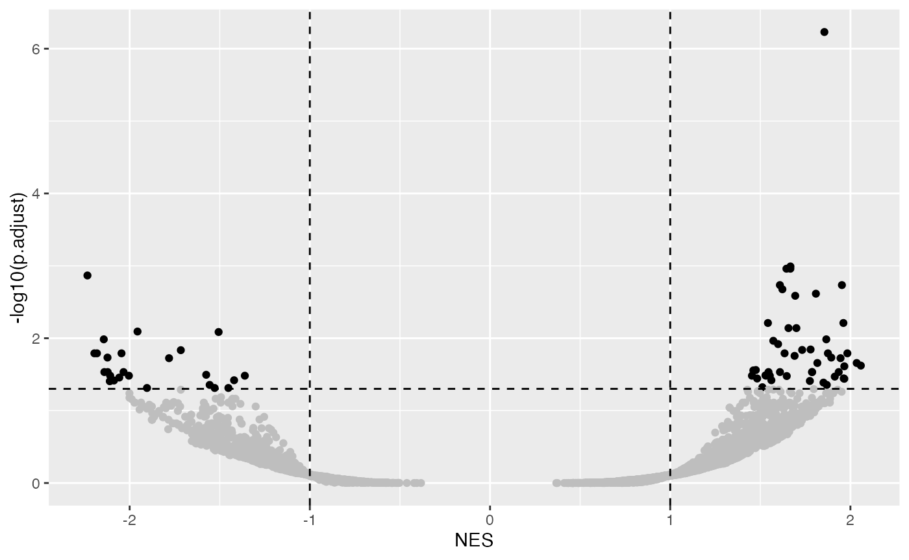
The degree of enrichment is also dependent to the gene set sizes.
ggplot(tb, aes(x = NES, y = -log10(p.adjust), color = setSize)) +
geom_point() + scale_colour_distiller(palette = "Spectral")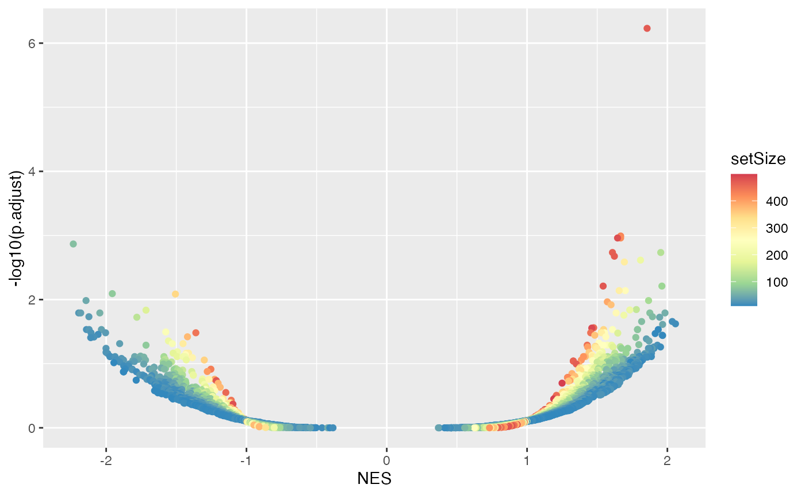
The ridge plot (joy plot/mountain plot) visualizes the distribution of gene-level scores in each gene set.
ridgeplot(res_gsea)## Picking joint bandwidth of 0.0291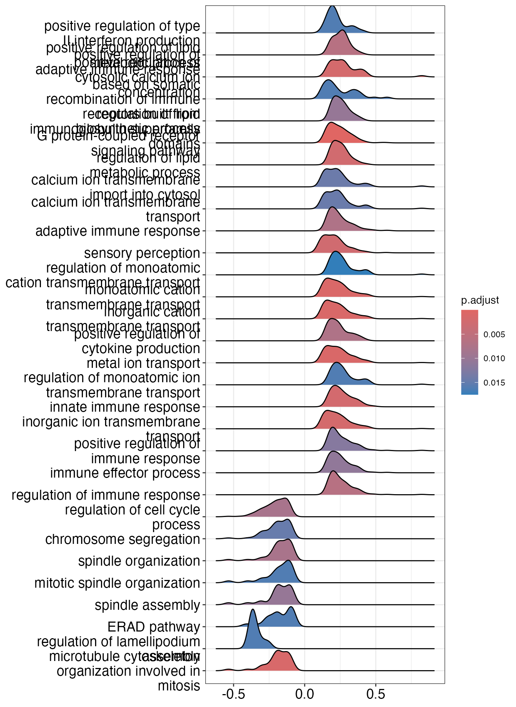
And the classic GSEA plot:
gseaplot(res_gsea, geneSetID = 4)
gseaplot2(res_gsea, geneSetID = 4)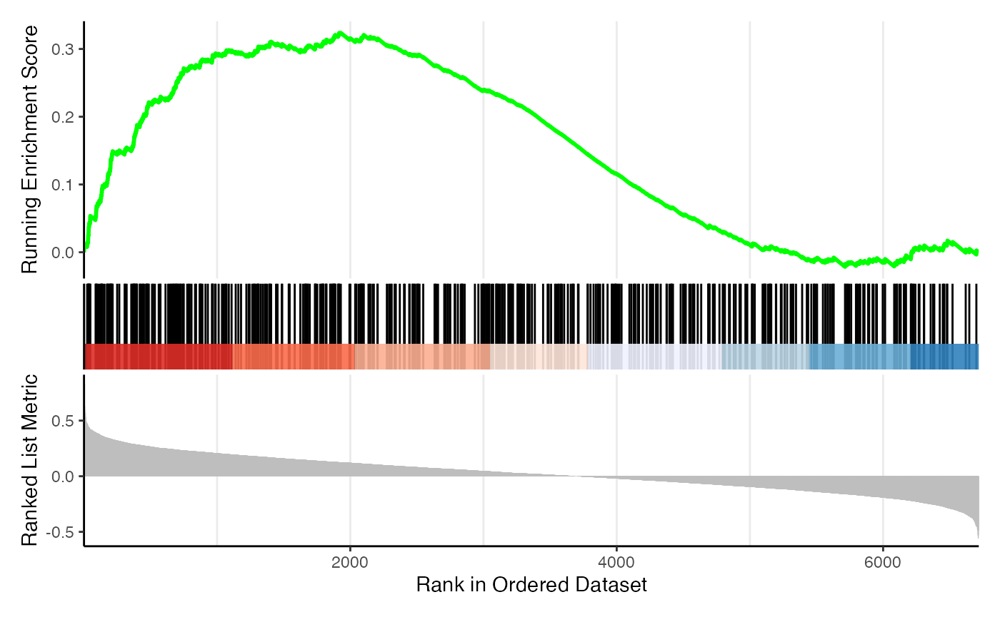
ind = c(which.max(res_gsea@result$NES), which.min(res_gsea@result$NES))
gseaplot2(res_gsea, geneSetID = ind)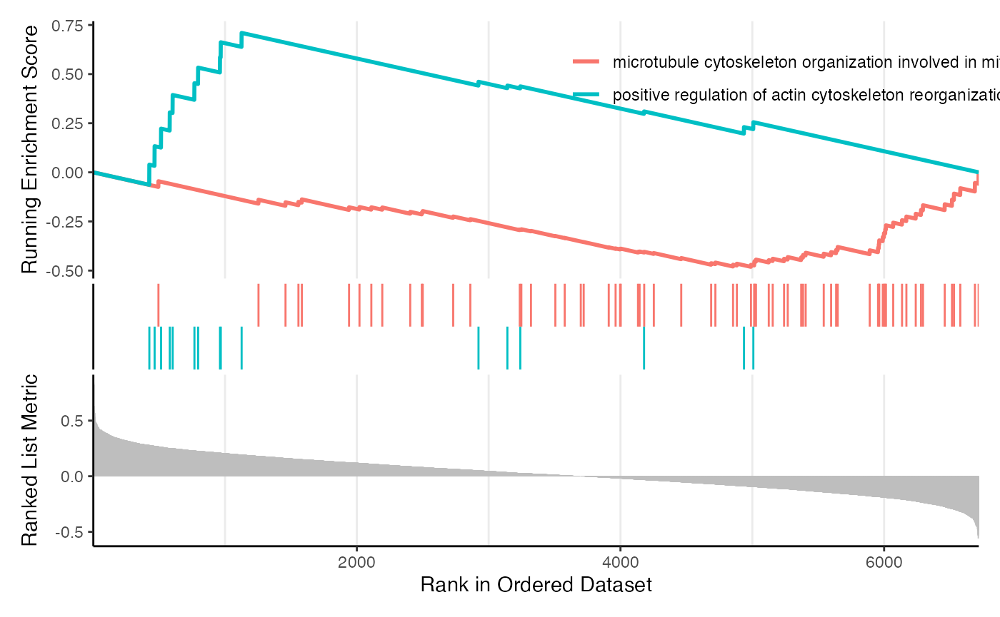